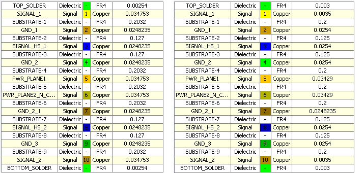
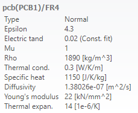
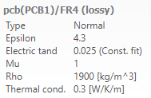

Modify PCB Stackup¶
A lot of different modifications can be done to the PCB. In addition to modifying the nets we can also make changes to the layers of our PCB.
Changing layer thickness¶
Preparations are again in order:
import cst.interface
from cst.eda import pcb_api
import cst.units
from pathlib import Path
import tempfile
data_dir = Path(cst.interface.install_paths.root()) / "Online Help" / "PythonTutorial" / "data"
de = cst.interface.DesignEnvironment.connect_to_any_or_new()
project_dir = Path(tempfile.mkdtemp())
print(f"Working in temporary directory: {project_dir}")
pcb_file = data_dir / 'cst_phone.tgz'
Project length-unit vs. PCB length-unit¶
As the PCB-instance is independent of the project-instance, the “cst.eda.pcb_api.PCB.length_unit” is not necessarily equal to the length-unit of the project.
Using length_unit on a PCB instance, returns its set unit for lengths as a “pcb.LengthUnit” object.
# Create an instance of a PCB
pcb = pcb_api.PCB.convert_from(pcb_file)
# get a layer from the PCB
layer = pcb.layer("GND_1")
# Set layer thickness to 10 um
layer.thickness = 10 * cst.units.um
# Print layer thickness
print(layer.thickness * pcb.length_unit.unit)
# Convert the PCB to use micrometers
pcb.set_length_unit(pcb_api.LengthUnit.micrometer)
# Print layer thickness
print(layer.thickness * pcb.length_unit.unit)
In the code above, we set the thickness of the “GND_1” layer to 10 micrometer.
Then we print the thickness value with the length unit of the PCB.
Here we use pcb.length_unit.unit to get the current length_unit from the PCB and then convert it to a “Unit.unit”.
After this we change the length unit of the PCB to pcb_api.LengthUnit.micrometer and call the same print command.
This will produce the following output:
0.39370078740157477 mil
10 um
The value is set to the intended value but also converted to the PCB’s length-unit. This allows us to set the thickness of layers depending on our data we have, the pcb_api will take care of unit conversions.
Modify thickness¶
Now that we know the relation between the project units and the PCB units, we can continue on to the next example.
# Import to a pcbs project
prj = de.new_pcbs()
prj.pcbs.set_pcb(pcb)
import json
# Get layer Data from files
with open( data_dir / "pcb_layer_thickness.json") as json_file:
layers_dict = json.load(json_file)
with open( data_dir / "pcb_layer_thickness_substrates.json") as json_file:
substrate_layers_dict = json.load(json_file)
# Combine all layer_dicts
all_layers_dict = layers_dict | substrate_layers_dict
# Strings for deserialisation of Units
unit_dict = {"mm": cst.units.mm, "mil": cst.units.mil}
# Iterate through all entries of layers_dict
for name, values in layers_dict.items():
layer = pcb.layer(name)
unit = unit_dict[values["Unit"]]
layer.thickness = values["Thickness"] * unit
# Import to a pcbs project
prj2 = de.new_pcbs()
prj2.pcbs.set_pcb(pcb)
In the example above, we import stackup information from two JSON files. The items of the dictionary use the layer names as key. Each item has a unit value and a thickness value.
The dictionaries are shown below. Note, that the input files use different length-units.
layers_dict = {
"TOP_SOLDER": {"Thickness": 0.118,"Unit": "mil"},
"SIGNAL_1": {"Thickness": 0.137,"Unit": "mil"},
"SIGNAL_2": {"Thickness": 0.137,"Unit": "mil"},
"SIGNAL_HS_1": {"Thickness": 1,"Unit": "mil"},
"SIGNAL_HS_2": {"Thickness": 1,"Unit": "mil"},
"GND_1": {"Thickness": 1,"Unit": "mil"},
"GND_2": {"Thickness": 1,"Unit": "mil"},
"GND_2_1": {"Thickness": 1,"Unit": "mil"},
"GND_3": {"Thickness": 1,"Unit": "mil"},
"PWR_PLANE1": {"Thickness": 1.35,"Unit": "mil"},
"PWR_PLANE2_N_CTRL": {"Thickness": 1.35,"Unit": "mil"},
"BOTTOM_SOLDER": {"Thickness": 0.118,"Unit": "mil"}
}
substrate_layers_dict = {
"SUBSTRATE-1": {"Thickness": 0.2,"Unit": "mm"},
"SUBSTRATE-2": {"Thickness": 0.125,"Unit": "mm"},
"SUBSTRATE-3": {"Thickness": 0.125,"Unit": "mm"},
"SUBSTRATE-4": {"Thickness": 0.2,"Unit": "mm"},
"SUBSTRATE-5": {"Thickness": 0.2,"Unit": "mm"},
"SUBSTRATE-6": {"Thickness": 0.2,"Unit": "mm"},
"SUBSTRATE-7": {"Thickness": 0.125,"Unit": "mm"},
"SUBSTRATE-8": {"Thickness": 0.125,"Unit": "mm"},
"SUBSTRATE-9": {"Thickness": 0.2,"Unit": "mm"}
}
We combine these two dictionaries into one, so that we can iterate through all layers.
To convert the unit from string-type of our dictionary to a cst.units.Unit, we use the created “unit_dict”. It holds the unit strings and the corresponding “cst.units.Unit”.
The code iterates through the items of the file and adjusts the thickness of the PCB layers.
The layer is retrieved using pcb.layer(name).
The set thickness depends on the “Thickness” values and on the unit given in the “Unit” value of the items.
Below we can see the layer stackup of the projects (left: before changes; right: after changes). All input values were converted to millimeter, the PCB’s length-unit.

Changing the Materials¶
# Create an instance of a PCB
pcb = pcb_api.PCB.convert_from(pcb_file)
# Import to a EMS project to show differences
prj = de.new_ems()
pcb.import_to(prj)
# Create a material
material_fr4_lossy = pcb.load_material_from_library("FR4 (lossy)", "FR-4 (lossy)")
material_fr4_lossy.unlink_from_library()
# Change property of material
material_fr4_lossy.rho = 1.9 * (cst.units.g / cst.units.cm**3)
# Show the changed value
print(f"{material_fr4_lossy.rho:.3f}")
# Iterate through all layers of the PCB
for layer in pcb.stackup.layers:
if layer.material.name == "FR4":
layer.material = material_fr4_lossy
# Import to a EMS project
prj_3d = de.new_ems()
pcb.import_to(prj_3d)
In the code above we create an instance of pcb_api.PCB as usual. To show the differences later on, we import the unmodified PCB into a project.
After this we create a new material using load_material_from_library with the name
we want the material to have and the library name of this material.
Before applying this material to some layers we want to change some of its properties.
For this we first need to call its method unlink_from_library().
This decouples our instance of the material from the library material, and we can now change its properties.
Here we can use the cst.units package again, to set the values of our properties.
As the density of the library material is 0, we want to set this to a value. For this we choose 1.9 g/cm³. After applying this value, we print the property. This results in an output as seen below.
1900.000
The value changed as it was converted to SI units (kg/m³) automatically when assigning it to the material. Now that the material fits our expectations, we can continue to apply the material to some of our layers.
Using pcb.stackup.layers we can iterate through each layer of our PCB.
Here we can check for the material name and change it to the newly created material,
if the current material name is “FR4”.

The image above shows the substrate layers’ material of the PCB without changes, and the image below shows the substrate layers’ material of the PCB after the changes. The material “FR4” is replaced by the chosen “FR4 (lossy)” material.
